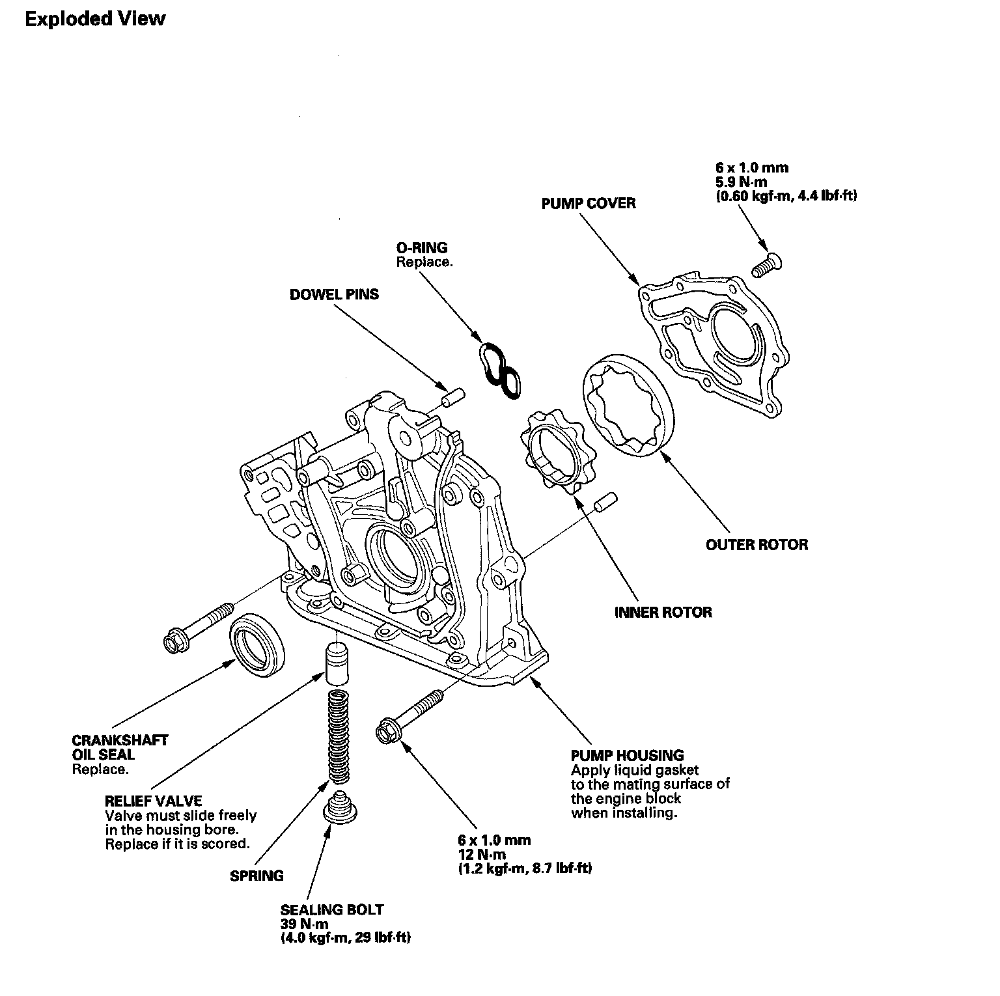
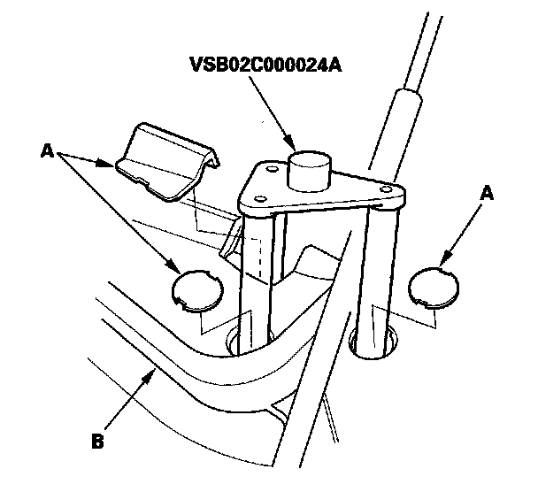
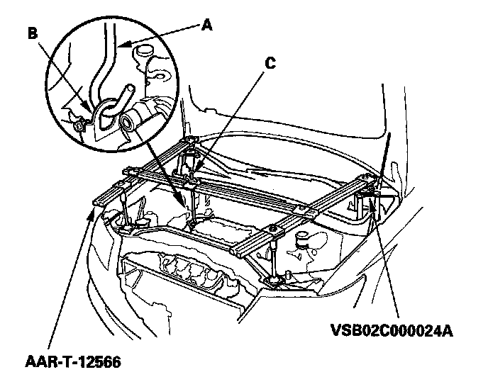
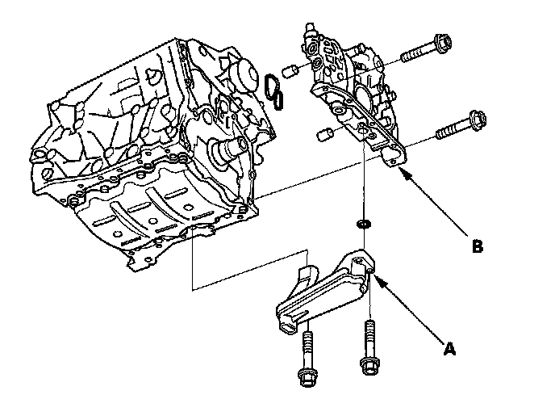
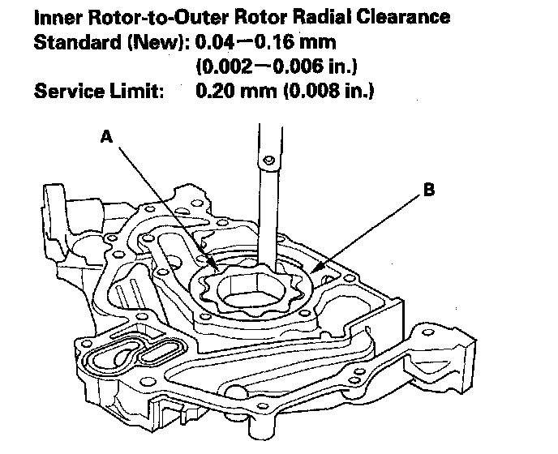
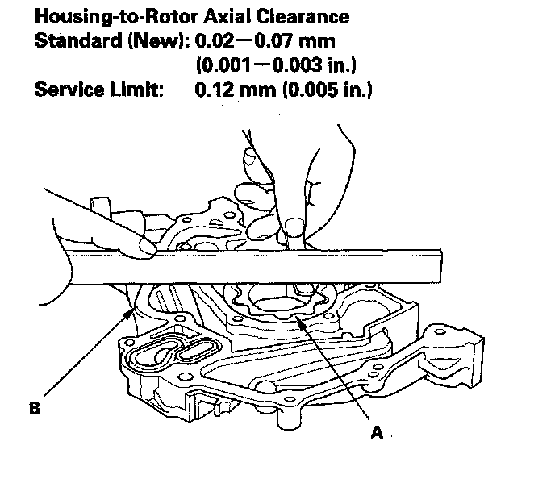
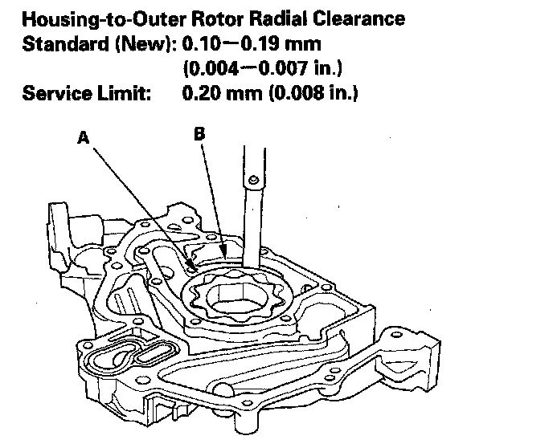
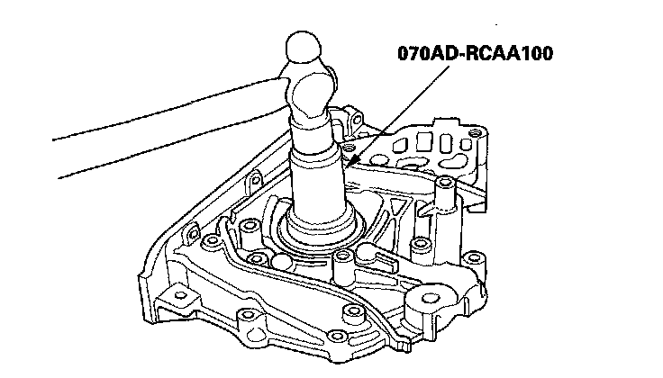
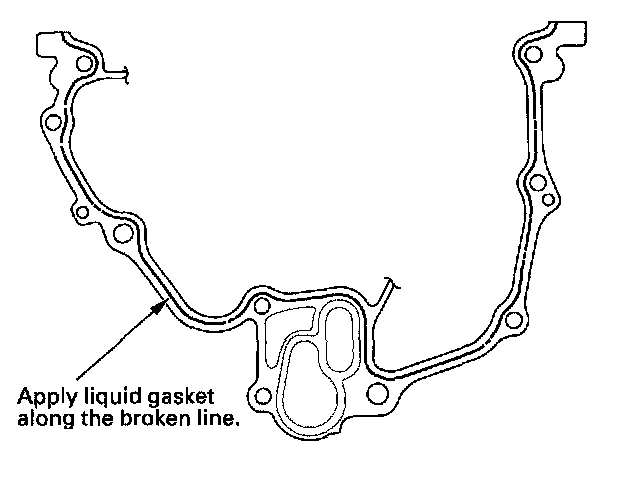
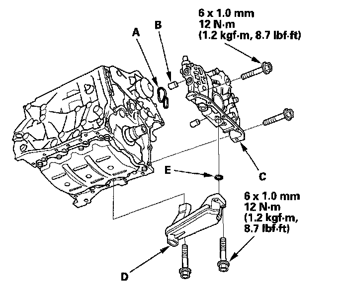

Oil Pump: Service and Repair
Oil Pump OverhaulOil Pump:

Special Tools Required
^ Oil seal driver, 64 mm 070AD-RCAA100
^ Engine support hanger A and Reds AAR-T-12566
^ Engine hanger adapter set VSB02C000024A
These special tools are available through the American Honda Tool and Equipment program, 1-888-424-6857.
Removal
1. Remove the bulkhead cover.
2. Remove the drive belt.
3. Remove the power steering (P/S) pump and P/S line bracket.
4. Remove the service caps (A) for the front damper flange nuts from the cowl cover (B). Position the engine hanger adapters (VSB02C000024A) with the "FRONT" mark facing forward over the damper flange nuts.

5. Install the engine support hanger (AAR-T-12566) to the vehicle, and attach the hook (A) to the engine hanger (B). Tighten the wing nut (C) by hand, and support the engine.

6. Remove the timing belt.
7. Remove the crankshaft position (CKP) sensor.
8. Remove the rocker arm oil control solenoid/oil filter assembly.
9. Remove the oil pan.
10. Remove the oil screen (A), then remove the oil pump (B).

Inspection
1. Remove the screws from the pump housing, then separate the housing and cover.
2. Check the inner-to-outer rotor radial clearance between the inner rotor (A) and outer rotor (B). If the inner-to-outer rotor clearance exceeds the service limit, replace the oil pump assembly.

3. Check the housing-to-rotor axial clearance between the rotors (A) and pump housing (B). If the housing-to-rotor axial clearance exceeds the service limit, replace the oil pump assembly.

4. Check the housing-to-outer rotor radial clearance between the outer rotor (A) and pump housing (B). If the housing-to-outer rotor radial clearance exceeds the service limit, replace the oil pump assembly.

5. Inspect both rotors and pump housing for scoring or other damage. Replace the parts, if necessary.
6. Apply liquid thread lock to the pump housing screws, then install the oil pump cover.
7. Check that the oil pump turns freely.
Installation
1. Remove the old oil seal from the oil pump.
2. Gently tap in the new oil seal until the oil seal driver bottoms on the pump.

3. Remove all of the old liquid gasket from the oil pump mating surfaces, bolts, and bolt holes.
4. Clean and dry the oil pump mating surfaces.
5. Apply liquid gasket, P/N 08717-0004, 08718-0001, 08718-0003, or 08718-0009, evenly to the engine block mating surface of the oil pump. Install the component within 5 minutes of applying the liquid gasket.
NOTE:
^ If you apply liquid gasket P/N 08718-0012, the component must be installed within 4 minutes.
^ If too much time has passed after applying the liquid gasket, remove the old liquid gasket and residue, then reapply new liquid gasket.

6. Grease the lip of the oil seal, and apply oil to the new O-ring (A).

7. Install the dowel pins (B), then align the inner rotor with the crankshaft, and install the oil pump (C).
8. Clean the excess grease off the crankshaft, and check the seal for distortion.
9. Install the oil screen (D) with new O-ring (E).
10. Install the rocker arm oil control solenoid/oil filter assembly, with a new rocker arm oil control solenoid filter.
11. Install the oil pan.
12. Install the crankshaft position (CKP) sensor.
13. Install the timing belt.
14. Remove the engine support hanger, and engine hanger adapters.
15. Install the service caps on the cowl cover.
16. Install the power steering (P/S) pump and P/S line bracket.
17. Install the drive belt.
18. Install the bulkhead cover.